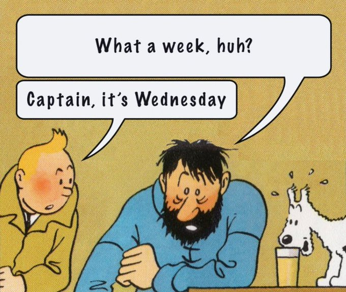

Introduction and Course Overview
Lucas S. Macoris
This slide was intentionally left blank
Welcome to the Course
- Overview and Course Organization
- Grading and Evaluations
- Navigating through the syllabus
- How you can get the best of this course
- Overall Q&A
Overview
With the recent advances in technical resources and the vast availability of financial information, finance practitioners are required to generate reproducible and scalable analysis in a timely fashion to guide decision-making:
- How can I continuously optimize the risk-return trade-off of my portfolio over time?
- What is the sensitivity of my investment decisions to changes in growth rates, discount rates, and expected margins?
- How can I assess the ability of a given trading strategy to outperform the market over time?
\(\rightarrow\) To that point, departing from the general tools, such as Excel, to more advanced tools, such as and , is an imperative change!
- The goal of this course: translate theoretical concepts learned on the core finance courses to practical applications that can guide decision making in real-world financial markets
Course Structure
This is a hands-on, practical course on Quantitative Finance with applications using and , two of the most widely used open-source software for data analysis. It will be structured in topics that are of interest to Finance practitioners, aiming to include, but not limited to:
- Collecting and organizing financial data
- Equity valuation
- Sensitivity analysis and simulation
- Portfolio optimization
- Backtesting
- Event Analysis
Students are also expected to interact with leading industry practitioners focused on financial applications using open-source languages, aiming to discover more about the possibilities of applying the skills learned in this course in the financial industry
Bibliography
- Mandatory reading: we will mostly follow Tidy Finance (Scheuch, Voigt, and Weiss 2023), as our text-book. Other relevant reading materials include:
- R for Data Science (Wickham, Mine Cetinkaya-Rundel, and Grolemund 2023)
- Quantitative Trading with R (Georgakopoulos 2015)
- Mastering Shiny (Wickham 2021)
- Supplementary Reading:
- Corporate Finance (Berk and DeMarzo 2023) - a companion for finance-related topics
- Other optional contents, such as Harvard Business School (HBS) Cases
Important
Most of the references listed in this bibliography have an open-source version that is hosted online, where you can copy-paste code chunks directly into your session. All contents will restricted access will be provided upfront.
Grading and Evaluations
Grading will be composed of the following activities:
- Handout Data Cases (40%)
- Capstone Project (40%)
- Project Showcase (15%)
- In-class Participation (5%)
- You can find the details of any of these activities in the official syllabus (available on eClass®)
- In case of any questions, feel free to reach out to lucas.macoris@fgv.br
Office-hours
I also host office-hours (by appointment) on Thursdays, 5PM-6PM. In these sessions, I’ll be more than happy to help you with anything you need from this course. Use the Office-hour Appointments link at the bottom of this slide to schedule an appointment (or click here).
Getting the best of this course

Getting the best of this course
How you can get the best of this course
- Follow FGV-EAESP code of conduct
- Be organized: pay attention to pre-readings and deliverables
- Be proactive: ask questions and participate in discussions
- Take the lead on your learning: you are the ultimate responsible for your success!
How the professor can facilitate you getting the best of this course
- All mandatory content and classes will be conducted in English
- Provide a safe and open space for questions, both in-person and remote
- Motivate students, both from the academic and practitioner standpoints
- Provide opportunities to extend knowledge beyond the mandatory readings
Getting the best of this course, continued
Tech setup: in the official page of your course, you will find instructions on how to properly set up your computer in terms of downloading all necessary softwares, packages, and customizing your session1
Code Replication: right after we are done with a given topic, try to replicate the in-class handouts on your end and check if you are able to yield the same outputs
Showcase: programming, data science, analytics, machine learning, and so on…these terms are on the hype of today’s job market - although few people really know how to make meaningful impact with it. Use this course as an opportunity to differentiate and showcase the skills you’ve learned and stand out to potential employers2
On the usage of gen-AI
On the usage of ChatGPT and other gen-AI tools
Generative Artificial Intelligent (gen-AI) adoption is quickly spreading through corporate life and universities. At this point, it is worth the question…am I allowed to use gen-AI tools in this course?
- The answer is yes! Not only you are allowed, but also encouraged to do so:
- Use gen-AI tools to proof-read your work, get insights, and troubleshoot errors
- Learn to be skeptical around the solutions you have been provided with
- Evaluations will be based on how you can interpret, understand, and showcase your solution to the broader audience!
\(\rightarrow\) See AI-powered coding pulls in almost $1bn of funding to claim ‘killer app’ status (Financial Times)
How to use these slides
These slides leverage Quarto, an open-source scientific and technical publishing system from Posit (formerly RStudio):
- Create dynamic content with , , , among other programming languages
- Publish reproducible, production quality articles, presentations, dashboards, websites, blogs, and books in HTML, PDF, Word, ePub, and more
- Write beatufil, clean technical documents using markdown, including equations, citations, crossrefs, figure panels, callouts, advanced layout, and more
For our course, we’ll use the following notation:
- Links will be colored in blue
- Inline equations and variables will be rendered in
gray - Code chunks will be provided along with outputs (
R)
An example of a code chunk
Note
In the R panel, hit Show the Code to display the code inside the tabset. Hit the button at the top-right to copy it to your session.

Interactive Learning
Listings, you will be prompted with an interactive R console that you can use to run existing and new code to a “virtual” session. Try changing the ticker to NVDA and check if anything has changed.
Interactive Learning, continued
Hints and Solution buttons to interact with the prompt. Even if you submit the wrong answer, a live-tutoring feature will provide you with a handful of tips to adjust your code and resubmit your solution. For example, complete the code to read Microsoft price (MSFT.csv) data and select the latest 10 OHLC (Open, High, Low, Close) information. The dataset is arranged in descendant format (latest price information is at the bottom of the table).
First, use the names() function to retrieve the names of the columns available in the dataset.
After that, use the tail() function to retrieve only the latest 10 observations.
References
Berk, J., and P. DeMarzo. 2023. Corporate Finance, Global Edition. Pearson. https://books.google.com.br/books?id=m78oEAAAQBAJ.
Georgakopoulos, Harry. 2015. Quantitative Trading with R. Palgrave Macmillan. https://link.springer.com/book/10.1057/9781137437471.
Scheuch, Christoph, Stefan Voigt, and Patrick Weiss. 2023. Tidy Finance with R. Chapman & Hall/CRC. https://www.tidy-finance.org/r/.
Wickham, Hadley. 2021. Mastering Shiny. O’Reilly Media. https://mastering-shiny.org/.
Wickham, Hadley, Mine Cetinkaya-Rundel, and Garrett Grolemund. 2023. R for Data Science. O’Reilly Media. https://r4ds.had.co.nz/.